OUM |
Technique Overview |
||
Method Navigation |
Current Page Navigation |
||
|
|
||||||||
The purpose of this technique is to provide a set of metrics used to measure and monitor changes in SOA maturity. The metrics presented do not represent a complete set, but should be used to discuss potential areas of applying metrics to assist an organization in measuring SOA maturity levels in addition to changes observed in the active SOA. The instrumented data used in support of the metrics collected in this document come from many different sources. In some cases the organization will not be able or willing to collect the data, or in other cases, the organization may collect the data differently. Therefore it is important to understand what metrics are best suited for the particular organization and work with the organization in determining the source of data to be instrumented to support the defined metrics.
If at all possible, execute a SOA Maturity Assessment prior to defining SOA maturity based metrics. This will provide the benchmark for measurement, in addition to providing input with respect to short-term and long-term goals and priorities of the organization around their SOA. For more information about how to execute a SOA Maturity Assessment, please review the Oracle practitioner guide, Creating an SOA Roadmap, available through oracle.com.
Achieving maturity in SOA is a primary goal of any organization adopting a Service Oriented Architecture. In support of that goal, the rate of maturity with respect to the adopted SOA IT strategy is something every organization strives to maximize.
At a minimum, organizations should take the time to periodically assess their SOA maturity level, and plan with respect to maturing in either one or more specific areas or evenly across all areas. In order to accomplish this, they first need to establish a baseline to measure and plan SOA maturity. The best way to achieve this is through the use of a SOA Maturity Matrix. This matrix is used as the foundation for this document. The metrics defined in this document utilize instrumentation collected through instrumenting the engineering, operational, and runtime processes. This technique will provide more accurate and timely data in support of changing maturity levels observed against the maturity matrix. More information about the maturity matrix can be found in Oracle practitioner guide, Creating an SOA Roadmap, available through oracle.com.
It is important to note that not all components of SOA maturity can necessarily be measured through the use of data collected through general day-to-day operational, runtime and engineering processes. Some data simply has to be harvested by examining the SOA from many different areas that will remain subjective with respect to interpretation. In these cases, the mechanism proposed by the assessment service involving interviewing several different individuals on the same indicators is the best way to understand current maturity levels.
Measuring maturity levels and more importantly changes in maturity levels requires identifying metrics in support of maturity based performance indicators which span larger periods of time. Understanding how the data changes over smaller samples taken within the examination area will assist an organization in understanding when and where potential maturity levels are changing.
The best tool for understanding maturity levels and changes within is to utilize trend based metrics. Trends involve sampling data over smaller, uniform periods of time, and plotting the changes between samples over extended periods. The sample size, and total length of the trend used will vary from organization to organization based on the amount of activity within the SOA program. For instance, if an organization is only producing one to two projects a year, with potentially only a handful of services, they most likely can utilize a quarterly, or at a minimum, monthly sample size extending over a several year period. On the other side, an organization that produces a large number of projects and services in a year would probably benefit from a weekly sample size, spanning the past year.
Trends provide an interesting perspective with respect to understanding maturity. The illustration below provides a sample trend:
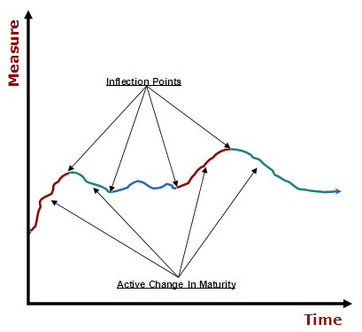
There are three areas that should be examined when analyzing trend based results:
When analyzing trends, it is important to consider that the information observed may be a little misleading. Just because the graph of a trend appears to be moving in a negative direction (as least with respect to general interpretation guidance), it does not mean that there is an actual change in maturity. The result may be because of a change in business patterns, or brought upon by a significant business event. What needs to take place when a negative (or even positive) change in the trend graph is apparent is an investigation into the potential reason for the change. If there is indeed a problem, then appropriate plans and actions should be put in place to either ensure continuation of a positive trend, or the eventual reversal of a negative trend.
Finally, when changes are executed by the SOA, they should be noted, and plotted against the affected trend analysis, that way the effect of the change may be analyzed. The illustration below provides an example:
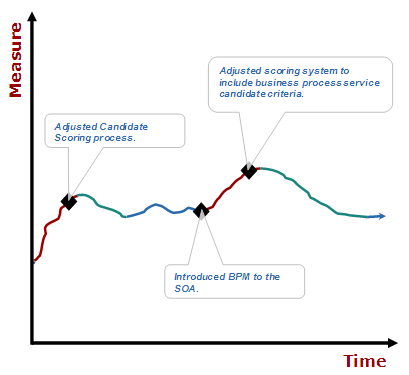
By plotting points where strategy changes took place, the apparent impact on the measure can be analyzed. If possible, the change should be plotted on several metrics (if not all) to see if there were any correlated impacts which were unforeseen, that may become apparent when plotting the strategy change across various trends.
SOA Maturity Instrumentation Metrics – The SOA Maturity Instrumentation Metrics contains all the metrics that the customer has decided to collect and measure upon to identify the areas applicable for improvement to accelerate their SOA maturity. In many cases, measuring SOA maturity is grounded in subjectivity, but there are a number of key performance indicators that can be defined and supported through the use of instrumentation that will provide a basis for identifying and understanding changes in maturity levels. The use of instrumentation provides concrete evidence in support of changing maturity levels, and can be used to understand when negative trends are taking place. If used effectively, the information can be acted on to make strategy changes to minimize the impacts of negative trends, and reverse the trends with the goal of minimizing the time required to reach optimized SOA at a maximum adoption level.
It is not intended to apply every metric in this technique for every customer. Further, there may be new metrics that need to be considered, so one should not be limited by the metrics defined in this technique. Each customer will be at a different level of maturity, and will have different goals and priorities for their SOA program. It is important to define maturity metrics around these goals and priorities. In many case it is not realistic for an organization to improve across all eight domains at once. Priorities should be established with respect to where the organization needs to go next, and a plan utilizing metrics defined in support of the priorities, should be executed to monitor for regressions or potential changing points in maturity.
No. |
Step | Component | Component Description |
|---|---|---|---|
1 |
Determine areas of the SOA Domain Model for which you want to monitor SOA maturity. | Monitoring Domains | This component describes the domains of the SOA Domain Model that should be focused on for monitoring the customers SOA Maturity. |
2 |
Determine metrics notation. | Metric Notation Standards | This component describes which notation is used to describe all the metrics that are used in the next chapters. |
3 |
Determine required business and strategy metrics. | Business and Strategy Metrics | This component includes all the metrics belonging to the Business & Strategy domain. |
4 |
Determine required architecture metrics. | Architecture Metrics | This component includes all the metrics belonging to the Architecture domain. |
5 |
Determine required infrastructure metrics. | Infrastructure Metrics | This component includes all the metrics belonging to the Infrastructure domain. |
6 |
Determine required information metrics. | Information Metrics | This component includes all the metrics belonging to the Information domain. |
7 |
Determine required operations, administration and management (OA&M) metrics. | OA&M Metrics | This component includes all the metrics belonging to the OA&M domain. |
8 |
Determine required projects, portfolios and services metrics. | Projects, Portfolios and Services Metrics | This component includes all the metrics belonging to the Projects, Portfolios & Services domain. |
9 |
Determine required organization metrics. | Organization Metrics | This component includes all the metrics belonging to the Organization domain. |
10 |
Determine required governance metrics. | Governance Metrics | This component includes all the metrics belonging to the Governance domain. |
First you need to determine which areas that are the most important to focus on for the customer in monitoring their SOA Maturity. To be able to do that, you need to get an understanding of the current status. Therefore you should preferably start with a SOA Maturity Assessment (if not done already) to determine level of SOA maturity of each domain. Once again, refer to the Oracle practitioner guide, Creating an SOA Roadmap, available through oracle.com for more details on how to execute a SOA Maturity Assessment.
When this has been done, you should use the results from the SOA Maturity Assessment as an input to a workshop where you with the customer will determine what areas should have the most focus. You should do this by walking through each domain and prioritize.
The SOA Maturity Assessment is designed to look at the current state of the organization and measure the maturity, adoption, completeness, and effectiveness related to SOA. The current state can then be analyzed to identify inhibitors to SOA adoption. Remedies for the inhibitors are identified and prioritized based on the impact and costs. The results are documented where details of the current state, the inhibitors, the remedies and the recommended initiatives, approaches, and priorities are provided.
This provides a pragmatic analysis of the actual business needs and the opportunities that can be addressed through an SOA implementation. It identifies opportunities for cost savings, organizational efficiencies and increased utilization of existing IT assets. Therefore this is also a good starting point to identify which areas are relevant for metrics collection.
The SOA Maturity Model includes over ninety capabilities that capture the best practices that Oracle has collected over many years working with a wide variety of companies, and additional capabilities are added as more best practices emerge. The SOA Maturity Model uses the concept of domains to classify and organize the related capabilities. As you can see in the figure below, there are eight domains in the maturity model:
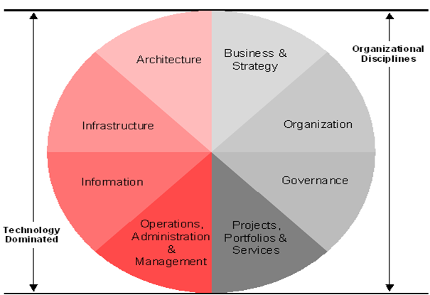
SOA Maturity Model
Business & Strategy - This domain contains capabilities that provide the high-level constructs that allow the SOA initiative to proceed. This includes such things as business motivation, expected benefits, guiding principles, expected costs, funding model, etc.
Architecture - This domain contains capabilities concerning the definitions of the overall architecture and guidelines for various practitioners to ensure adherence to the architecture.
Infrastructure - This domain contains capabilities concerning the service infrastructure and tools that provide the technical foundation for the SOA initiative.
Information - This domain contains capabilities concerning the information aspects of SOA, e.g., providing Information as a Service (IAAS). This includes shared data models, message formats and schemas, master data management, content management, etc.
Operations, Administration& Management - This domain contains capabilities concerning the post deployment aspects of solutions based on a service-oriented architecture.
Projects, Portfolios & Services - This domain contains capabilities concerning the planning and building of services and the service usage guidelines of service consumers.
Organization - This domain contains capabilities concerning the development of corporate competency around SOA including the organizational structure and skills development.
Governance - This domain contains capabilities concerning the governance structures and processes that support and guide the SOA efforts. Maturity and adoption of adequate amount of governance is a leading indicator of the overall SOA success.
There are several different ways to notate metric computations. A few basic requirements are necessary when selecting a notation:
For the purpose of this technique, a relatively simple notation has been selected which meets these criteria. In this notation there are two main clauses:
For the purpose of describing the notation a sample computation has been illustrated below:

Sample Metric Computation
The top portion of the above illustration represents the title for the metric. The center provides the metric’s expression, and the lower portion represents the data required in the computation.
Statement: for each <target> - The for each clause is used to iterate over the <target> entity or entities. for each clauses may be nested.
Statement: where (conditions) - The where clause is used to provide conditions for the for each clause in which it is nested. The (conditions) statement is optional, and if omitted it means that all entities referenced within appropriate level of the expression will be included in the calculation.
Input: t1 & t2 - The starting time and ending time for the computation is represented as t1 (starting time) and t2 (ending time).
Input: sample - If sample is provided as the <target> of a for each clause, then it is providing the time period to break up the results over. For instance if t1 = Jan 1, 2000 and t2=Dec 31, 2007 and the sample is specified as 1 year; then the for each will take 8 iterations (one for each year). This allows for flexibility, as the sample may be set to something finer grained, or even set to the entire time period.
Referencing Variables: - Variables are identified within the Data clause (see below). If a variable references an entity, an element within the entity can be referenced by using the “.” separator. For instance from the example above, referencing the Service Reuse List of the Project entity would be achieved as follows: p.Service Reuse List.
Booleans: - In the expression it is sometimes necessary to count against a Boolean expression. Therefore, mathematically, when Boolean are used in expressions, 0 is the mathematical representation for false and 1 is the mathematical representation for true.
The Data clause contains definitions for the list of variables used in the Expression clause, and maps them to the source within the conceptual instrumentation data from which they originated. A variable can be specified against an entire conceptual instrumentation entity, or elements within entities.
If you have decided that you should focus on the Business & Strategy domain, you should now look at metrics that could be relevant for this area.
Achieving maturity in the Business & Strategy domain means the following areas should be considered:
The metrics presented in this section are designed to monitor for changing maturity levels within the Business & Strategy domain, and provide guidance with respect to how to properly interpret and utilize the information presented through the metric to effectively monitor maturity within this domain.
The Reuse vs. Service Creation – Trend metric is depicted below:
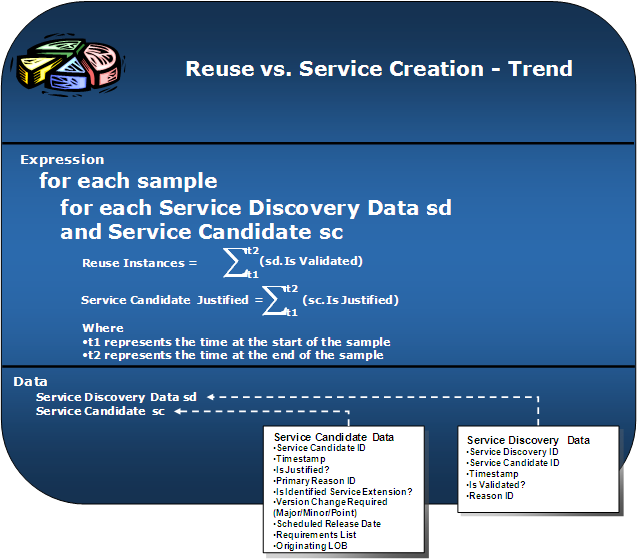
Metric: Reuse vs. Service Creation - Trend
Purpose: Understanding the rate of new service creation with respect to the rate of service reuse is important to understanding the overall effectiveness of the SOA program, especially with respect to building the right services.
Computation: This metric computes the percentage of services being validated for reuse by consumers vs. service candidates being justified for realization. The data is collected across multiple, uniform samples in order to provide for trend analysis.
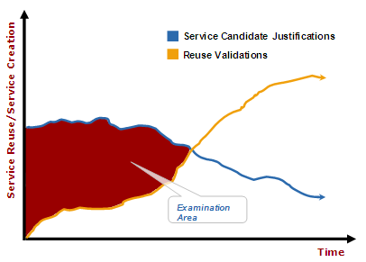
Analysis: Reuse vs. Service Creation - Trend - 1
Interpretation: It is not uncommon for a new SOA to initially have a large number of new service creations justified, that may be sustained over some period of time. Further, it is also not uncommon for reuse levels to be initially low. However, the rate of reuse should typically never be below the rate of service creation, as this means that services are being created with no consumers. The wider the gap between a reuse curve which is under the creation curve, the more concern there should be from a cost and benefits standpoint. The example above shows an extreme case, where it is very likely that the SOA is producing very little from a cost and benefits perspective and probably has an overall negative perception from the business.
The figure below illustrates another scenario that should be considered as negative from a cost and benefits perspective:
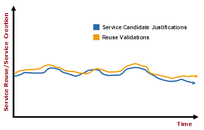
Analysis: Reuse vs. Service Creation - Trend - 2
Interpretation: In this scenario the service creation and reuse trends follow very similar paths. This scenario indicates that for each service created the reuse level is not much more than a uniform small number (e.g., >= 1 but <= 5). This type reuse model is acceptable for high-value, agility enabling services, but is not very good for highly reusable, lower level services, which typically are the first ones to be created, and reused often (in an effective SOA). Again this trend warrants a closer look especially with respect to the types of services being justified and the projected reuse levels on those services. This model, if sustained over a long period of time does not lead to an overly cost effective SOA.
The Technology Justification Failures – Trend metric is depicted below:

Metric: Technology Justification Failures - Trend
Purpose: When service candidates are presented for justification as shared services, there are many reasons to deny a particular service candidate for realization as a shared service. Technology impact is one of those reasons. When technology is determined to be the main inhibitor for realization of the service candidate as a one or more shared services, it indicates that the organization does not possess the technology, or is unwilling to invest in the technology necessary to realize the service candidate.
Computation: This metric computes the percentage of technology based service candidate justification failures with respect to the rest of the reasons why service candidates are being denied realization. The data is collected over multiple samples of unified length in order to provide for trend analysis.

Analysis: Technology Justification Failures - Trend
Interpretation: Minimizing the percentage of justification failures due to technology impact is the goal. Any observed areas of increasing trend or sustained high levels should be examined closely. If a particular technology or component of the architecture is missing that could be added to achieve justification for service candidates denied in the examination area then an investment should be considered. This has an obvious impact on the Business & Strategy domain. If services, especially those of high reuse or agility potential are not being realized because of a gap in technology, then an investment should be considered as the overall potential observed from the SOA is being limited.
The QoS Justification Failures – Trend metric is depicted below:
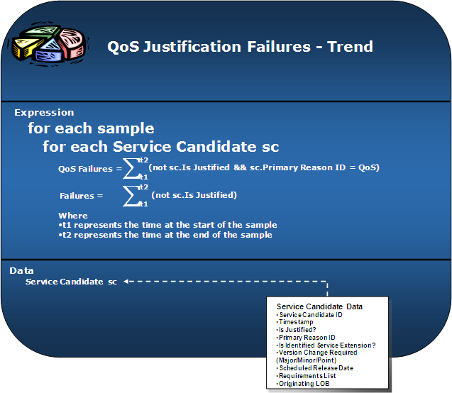
Metric: QoS Justification Failures - Trend
Purpose: When service candidates are presented for justification as shared services, there are many reasons to deny a particular service candidate for realization as a shared service. QoS feasibility is one of those reasons. When QoS is determined to be the main inhibitor for realization of the service candidate for potentially one or more shared services, it indicates that the organization does not believe the realization of the service for the expected demand on the service in the shared environment is feasible, or is unwilling to invest in the changes necessary to realize the service candidate and achieve expected QoS levels.
Computation: This metric computes the percentage of QoS based service candidate justification failures with respect to the rest of the reasons why service candidates are being denied realization. The data is collected over multiple samples of unified length in order to provide for trend analysis.
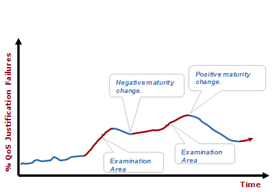
Analysis: QoS Justification Failures - Trend
Interpretation: Minimizing the percentage of justification failures due to QoS feasibility is the goal. Any observed areas of increasing trend or sustained high levels should be examined closely. If a particular technology or component of the architecture is missing that could be added to achieve justification for service candidates denied in the examination area then an investment should be considered. This has an obvious impact on the Business & Strategy domain. If services, especially those of high reuse or agility potential are not being realized because of a gap in technology, then an investment should be considered as the overall potential observed from the SOA is being limited.
The Capacity Reuse Justification Failures – Trend metric is depicted below:
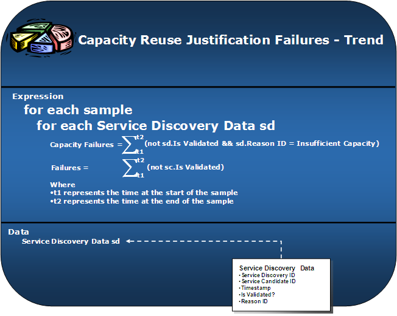
Metric: Capacity Reuse Justification Failures - Trend
Purpose: When services are discovered for potential reuse, there is a validation process that should be executed to ensure that the service to be consumed is appropriate for the consumers needs. There are many reasons to deny a particular service for reuse by a particular consumer. One of those reasons is available capacity. When a reuse candidate is denied for capacity reasons, it means that there is insufficient capacity available to service the consumer (based on the requested amount of consumption), and the organization is not willing to invest in the changes necessary to increase the capacity necessary to service this consumer.
Computation: This metric computes the percentage of capacity based service reuse validation failures with respect to the rest of the reasons why service reuse requests are being denied. The data is collected over multiple samples of unified length in order to provide for trend analysis.
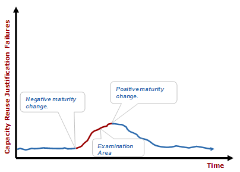
Analysis: Capacity Reuse Justification Failures - Trend
Interpretation: Minimizing the amount of capacity based reuse validation failures is always the goal. If there is insufficient capacity, and an inability to expand capacity within the SOA’s operational environment then the overall effectiveness of the strategy will be at risk. These types of validation failures may be acceptable periodically, especially when the needs of the consumer are unrealistic, but generally the service should be designed for reuse, and the environment it is placed in should be architected for scalability. An increasing trend in this metric must be viewed negatively with respect to maturity in the Business & Strategy domain.
The Security Reuse Justification Failures – Trend metric is depicted below:
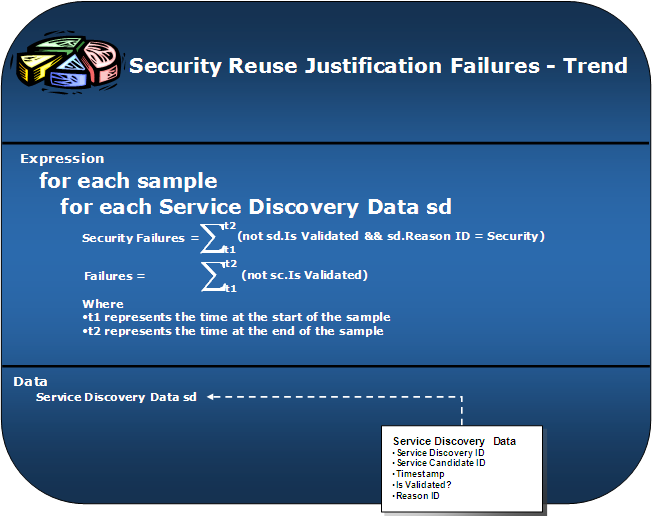
Metric: Security Reuse Justification Failures - Trend
Purpose: When services are discovered for potential reuse, there is a validation process that should be executed to ensure that the service to be consumed is appropriate for the consumers needs. There are many reasons to deny a particular service for reuse by a particular consumer. One of those reasons is security. There are two potential possibilities that may come into play with respect to security being the reason for denying reuse. The first is that simply the consumer should not be allowed to access the capabilities of the service. The second is that the security capabilities necessary to allow the consumer access to the service is simply not available, and the organization is not willing to invest in the changes necessary to enable these security capabilities.
Computation: This metric computes the percentage of security based service reuse validation failures with respect to the rest of the reasons why service reuse requests are being denied. The data is collected over multiple samples of unified length in order to provide for trend analysis.
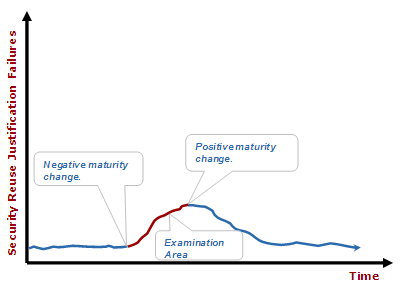
Analysis: Security Reuse Justification Failures - Trend
Interpretation: In this case, increasing trends in security related validation failures are interesting, but do not necessarily require action. Basically, if the examination area shows a large number of denials taking place because inadequate security technology is in place to support the consumer, then action should be considered to realize this technology in order to prevent future denials for the same reason. The inability for a viable consumer to not be able to reuse an existing service for this reason is a definite inhibitor with respect to the Business & Strategy domain. Analysis should be taken to determine if making the investment to fill this security gap will pay for itself in reuse savings.
The Agility Candidate Justifications – Trend metric is depicted below:
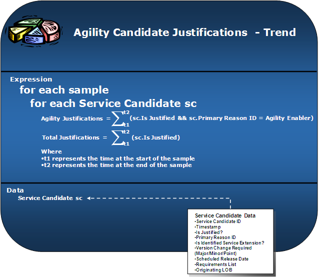
Metric: Agility Candidate Justifications - Trend
Purpose: Agility is one of the key goals that organizations seek to achieve with respect to their SOA. Monitoring trends in services justified for the purpose of agility provides important information with respect to achieving maturity with SOA.
Computation: This metric computes the percentage of service candidate justifications where the primary reason for justification is agility. This metric measures this value with respect to the rest of the reasons why service candidates are being justified for realization. The data is collected over multiple samples of unified length in order to provide for trend analysis.
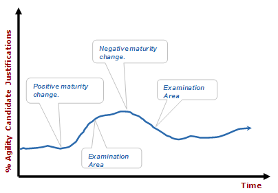
Analysis: Agility Candidate Justifications - Trend
Interpretation: Typically services that are realized for the purpose of providing increased agility to the business come with a high value with respect to potential business value generated through the realization of the service. These particular types of services do not necessarily require a large number of reuse instances to be valuable in the organization. An increasing trend in these types of services is definitely viewed as an increase in maturity with respect to the Business & Strategy domain, as it is indicative of more services being created with higher strategic value. One cautionary note is that these services should rarely be created without at least one consumer as they typically require more investment to produce. Therefore, when increasing trends in agility enabling services are observed, the Service Reuse versus Creation metric (see the Reuse vs. Service Creation above) should also be observed. (It may be worth creating a specific version of this metric which only measures reuse of agility enabling services versus the creation of these types of services.)
With respect to the Business Process & Strategy domain, an increase in agility based service population indicates that more services are being created that are in direct support of the business, and that there is a likelihood that increased business alignment is being achieved through IT.
The Design: Reuse Justification Failures – Trend metric is depicted below:
Metric: Design: Reuse Justification Failures - Trend
Purpose: When services are discovered for potential reuse, there is a validation process that should be executed to ensure that the service to be consumed is appropriate for the consumers needs. There are many reasons to deny a particular service for reuse by a particular consumer. One of those reasons is when the service is not designed in a way that would make it appropriate for reuse by the consumer. When a reuse candidate is denied for design reasons, it means that the service was not designed to meet the demands of this particular consumer, and the organization is not willing to invest in the changes necessary redesign the service to meet the demands of this consumer.
Computation: This metric computes the percentage of design based service reuse validation failures with respect to the rest of the reasons why service reuse requests are being denied. The data is collected over multiple samples of unified length in order to provide for trend analysis.
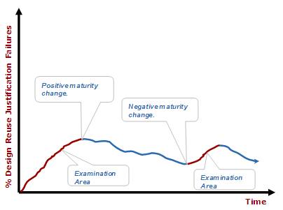
Analysis: Design: Reuse Justification Failures - Trend
Interpretation: Minimizing this trend variable is the goal of every SOA. Any increasing trend, or sustained high-level of design based denials is an indicator that services are not being designed with enough flexibility to support a sufficient majority of consumers that are emerging to realize the services.
The Requirements: Reuse Justification Failures – Trend metric is depicted below:
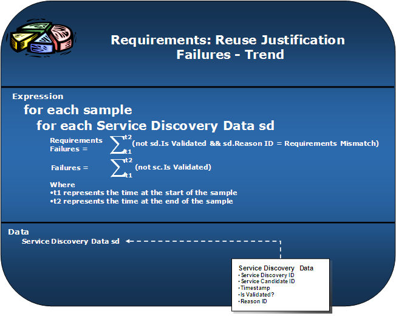
Metric: Requirements: Reuse Justification Failures - Trend
Purpose: When services are discovered for potential reuse, there is a validation process that should be executed to ensure that the service to be consumed is appropriate for the consumers needs. There are many reasons to deny a particular service for reuse by a particular consumer. One of those reasons is when the service does not meet the specific requirements demanded by the consumer.
Computation: This metric computes the percentage of requirements based service reuse validation failures with respect to the rest of the reasons why service reuse requests are being denied. The data is collected over multiple samples of unified length in order to provide for trend analysis.
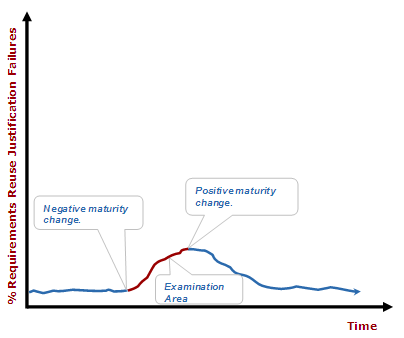
Analysis: Requirements: Reuse Justification Failures - Trend
Interpretation: When requirements mismatches are determined to be the cause for service reuse validation failures it may be stemming from two potential problems. One, the requirements gathering process, and service design process is not thinking broadly enough with respect to potential consumers; or two, the discovery process is failing, in that the service was never designed for use by the proposed consumer.
In the event of the first case, there is a negative impact with respect to the Business & Strategy domain, because services that should have been designed for use by consumers are being denied because the requirements were not considered. In order to prevent further damage, closer scrutiny should be given to the service definition and design processes where a wider audience of potential consumers needs to be considered with respect to defining and designing the services capabilities. This process does not necessarily need to ensure that the requirements are fulfilled in the current release of the service, but it should ensure that adding the requirements later will require as little impact to existing consumers as possible.
The Justified Major Service Version Change – Trend metric is depicted below:
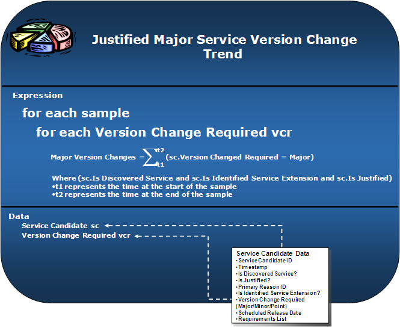
Metric: Justified Major Service Version Change - Trend
Purpose: Major service version changes have the potential for a large disruptive impact on the consumers of a service, and may be viewed very negatively against overall SOA effectiveness, especially if many are observed. This metric is designed to monitor the amount of major service versions being undertaken to support additional consumers.
Computation: This metric totals the number of major service version changes approved to existing services over multiple samples of uniform length. The data is used for the purpose of trend analysis.
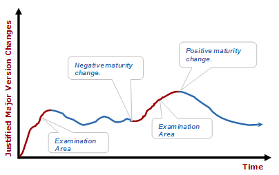
Analysis: Justified Major Service Version Change - Trend
Interpretation: Major service version changes should be held to a minimum, and organizations should define target levels for this metric. Any observed increasing trend, or sustained high value with respect to this metric is a red flag with respect to overall SOA effectiveness, as it represents a breakdown in flexibility and the ability of the organization to cope with change.
High or increasing trends noticed through analyzing this metric represent negatively towards maturity in the Business & Strategy domain as major service changes are typically disruptive and potentially expensive.
The Service Creation by Category – Trend metric is depicted below:
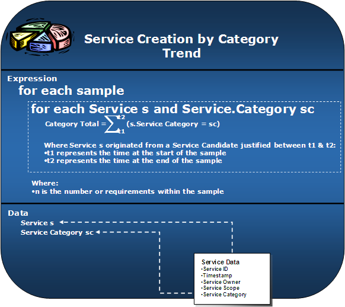
Metric: Service Creation by Category - Trend
Purpose: Understanding the rate of growth with respect to services of varying category is important in understanding the types of services that are currently (and historically) produced by the service factory. Different categories of services represent different capabilities and values with respect to the SOA. For instance, utility services are typically highly reusable, but typically do not directly provide any business value (other than assist IT in getting things done faster); whereas business services are typically reused but provide direct business value.
Computation: This metric totals service creation by category where the services originated from service candidates approved for realization within the sample period. Each sample is of uniform length so trend based analysis can be completed against the data.
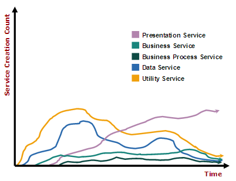
Analysis: Service Creation by Category - Trend
Interpretation: A positive maturity indicator with respect to the Business Process and Strategy domain is the existence, or increasing production of Business, and Business Process services. These types of services, if justified correctly, are typically developed in direct support of the business strategy and or business processes.
If you have decided that you should focus on the Architecture domain, you should now look at metrics that could be relevant for this area.
Monitoring maturity in the Architecture domain means the following areas should be considered:
The metrics presented in this section are designed to monitor for changing maturity levels within the Architecture domain, and provide guidance with respect to how to properly interpret and utilize the information presented through the metric to effectively improve maturity within this domain.
The Service Architecture Conformance – Trend metric is depicted below:
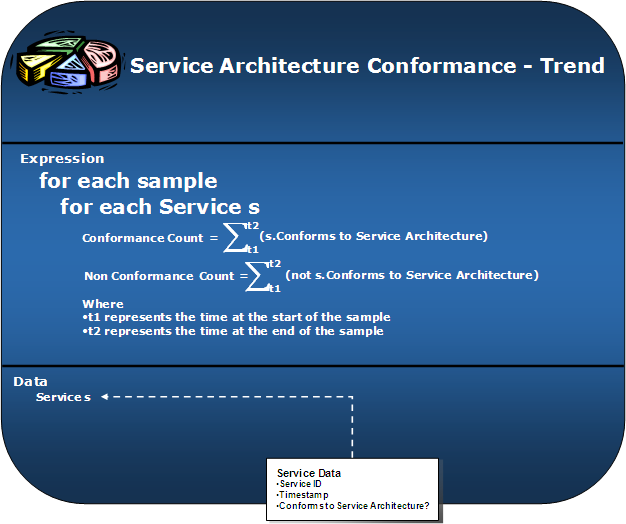
Metric: Service Architecture Conformance - Trend
Purpose: Conformance to the Service Architecture is a fundamental element of achieving consistency through the service engineering factory. Consistency is important because it is a major component of achieving flexibility, and overall manageability of the assets delivered into the SOA. This metric examines services being delivered into the operational SOA environment. In particular it computes a trend of those services that conform to the predefined Service Architecture versus those that do not.
Computation: This metric computes a percentage for each sample size of the number of services being delivered through the engineering factory which conform to the Service Architecture versus those that do not.
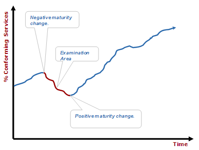
Analysis: Service Architecture Conformance - Trend
Interpretation: The goal is to maximize conformance to the Service Architecture. Obviously areas of downward trend are a concern and need to be examined more closely. Target levels should be established within the organization as goals to achieve the next level of maturity. It is quite common to see downward trends (or flat trends at a low percentage rate) in relatively new SOAs, but an optimized SOA with a broad adoption level (such as Cross Divisional or wider) will most certainly have a conformance level very close to 100%.
A downward trend or flat area observed at a low percentage should be examined closer. To examine this closer, a Service Architecture Non-Conformance metric which breaks down non-conformance by reason should be examined across the area of interest. This metric is depicted below:
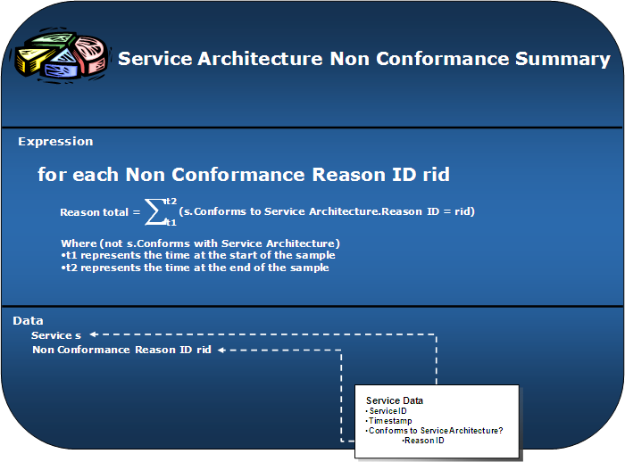
Metric: Service Architecture Non Conformance Summary - Trend
Purpose: This metric measures the general reasoning provided for allowing a service’s delivery to deviate from the service architecture. The following reasons are possible:
Computation: This metric simply totals non-conforming services by reason id. The services counted are limited to the provided time parameters to allow for isolation in the data.
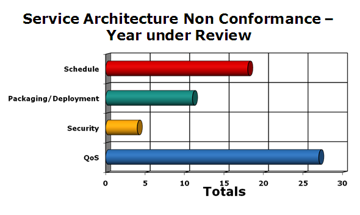
Analysis: Service Architecture Non Conformance Summary - Trend
Interpretation: With respect to Architecture, a high number of deviations may be indicative of problems with the Reference Architecture, or gaps (such as in technology) in the Architecture that may need to be filled. The following provides a summary by reason:
The Production Regression Defects – Trend metric is depicted below:
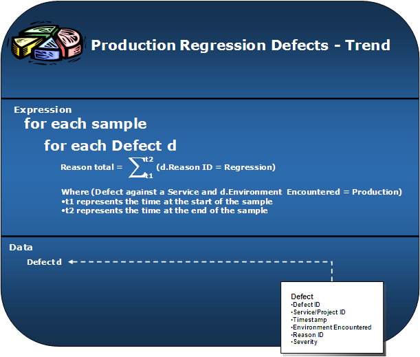
Metric: Production Regression Defects - Trend
Purpose: Regression defects observed against services represent a break-down in overall service evolution quality, and may lead to problems with respect to trust in the service factory and overall SOA strategy by service consumers. A break down in trust may lead to a lengthy test cycle from the consumer side prior to the release of any changes to services which can greatly hinder the SOA’s ability to deliver change rapidly. This metric monitors the number of regression defects recorded against services, which should be closely monitored in order to prevent any breakdown in trust between the service factory and its consumers.
Computation: This metric simply counts the number of regression defects opened against services over the sample periods and provides a trend of change in regressions recorded across each sample.
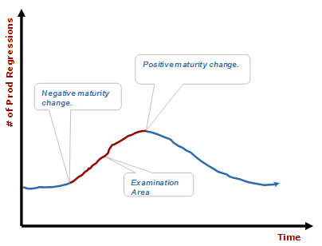
Analysis: Production Regression Defects - Trend
Interpretation: The goal is to keep regressions at a very low level. Any area of increasing trend or flat areas recorded at high-levels need to be examined closely. There are multiple reasons for regressions, one of which may be indicative of a breakdown or failure with respect to the versioning strategy. Other areas which may require a closer look include the test standards established. In this case, examining defects and the services that they are recorded against may lead to answers. In the area of interest, look at the following:
The SLA Violations – Trend metric is depicted below:
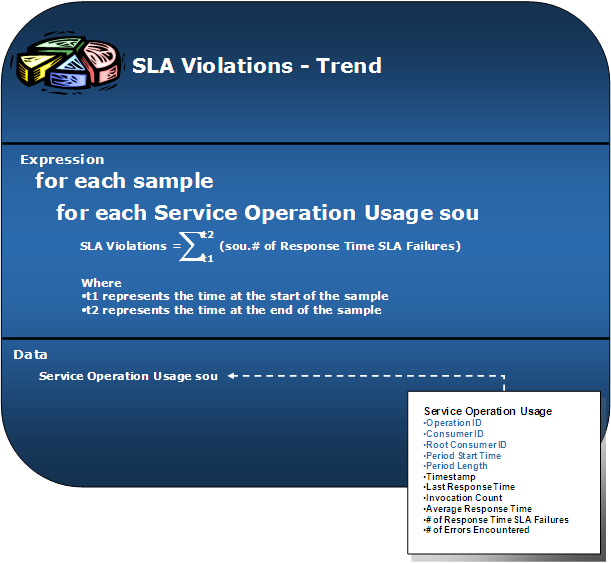
Metric: SLA Violations - Trend
Purpose: SLA violations indicate the breach of a contract by a service provider with respect to its consumers. Typically, these are not functional in nature; however they do lead to a lowered perception of the SOA, and a reduced amount of trust from the consumer with respect to the services offered through the SOA. Monitoring trends in SLA violations will help the SOA leadership to ensure a high level of quality with respect to the service levels offered by the SOA and narrow down areas where unacceptable breakdowns in service levels have been observed.
Computation: This metric utilizes runtime data collected against the operational environment. The metric counts SLA violation instances recorded during runtime operations over a set of sample periods which is used to generate a trend of observed SLA violations.
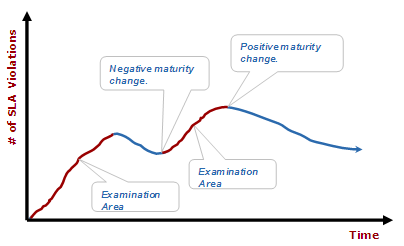
Analysis: SLA Violations - Trend
Interpretation: The obvious goal is to sustain a very low level of SLA violations observed against the operational SOA environment. Any area of increasing trend or level areas observed at a high point in the graph need to be closely examined. With respect to Architecture, general scalability and availability capabilities should be examined. Further, test strategy should be checked for accuracy with respect to capacity planning. SOA leadership should define acceptable levels of SLA violations, as well as those targeted with respect to predefined goals. This metric should be used to monitor the SOAs performance against these goals.
The Trouble Ticket Outages – Trend metric is depicted below:
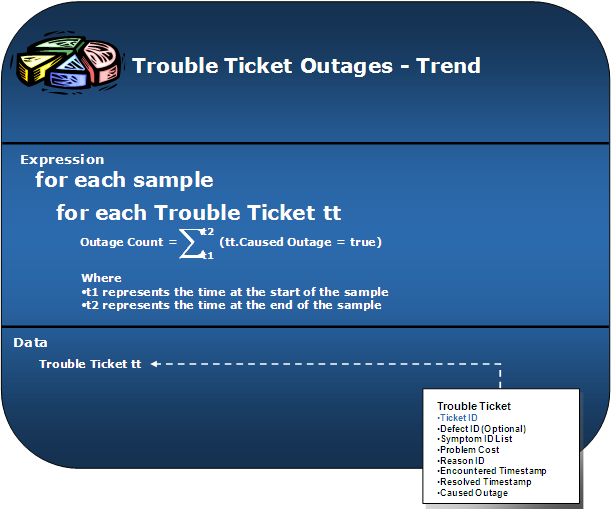
Metric: Trouble Ticket Outages - Trend
Purpose: Trouble tickets resulting in outages are obviously the most disruptive, and play a negative effect to the overall observed SLA offered from IT and its ability to sustain operational uptime.
Computation: This metric simply counts trouble tickets that resulted in outages across multiple, contiguous samples. The results can be used to create a trend representing outage occurrence levels observed against the operational environment.
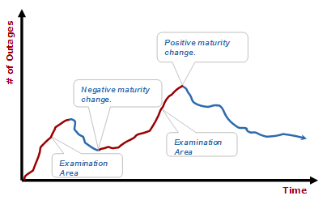
Analysis: Trouble Ticket Outages - Trend
Interpretation: The goal is to minimize or sustain a level of zero outages. Any are of increasing trend, or observed flat areas at high levels should be taken seriously. From an architecture perspective, outages may be the result of scalability, or availability issues stemming from the reference architecture. In order to get more detail, the actual root cause for a sample of these trouble incidents should be examined. Further application of technology or engineering may be viable to prevent future recurrence and lower the overall level of outages observed in the operational environment.
The Technology Justification Failures – Trend metric is depicted below:
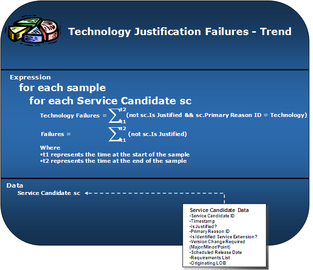
Metric: Technology Justification Failures - Trend
Purpose: When service candidates are presented for justification as shared services, there are many reasons to deny a particular service candidate for realization as a shared service. Technology impact is one of those reasons. When technology is determined to be the main inhibitor for realization of the service candidate as one or more shared services, it indicates that the organization does not possess the technology, or is unwilling to invest in the technology necessary to realize the service candidate.
Computation: This metric computes the percentage of technology based service candidate justification failures with respect to the rest of the reasons why service candidates are being denied realization. The data is collected over multiple samples of unified length in order to provide for trend analysis.
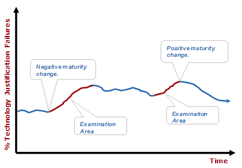
Analysis: Technology Justification Failures - Trend
Interpretation: Minimizing the percentage of justification failures due to technology impact is the goal. Any observed areas of increasing trend or sustained high levels should be examined closely. If a particular technology or component of the architecture is missing that could be added to achieve justification for service candidates denied in the examination area then an investment should be considered.
The QoS Justification Failures – Trend metric is depicted below:
Metric: QoS Justification Failures - Trend
Purpose: When service candidates are presented for justification as shared services, there are many reasons to deny a particular service candidate for realization as a shared service. QoS feasibility is one of those reasons. When QoS is determined to be the main inhibitor for realization of the service candidate for potentially one or more shared services, it indicates that the organization does not believe the realization of the service for the expected demand on the service in the shared environment is feasible, or is unwilling to invest in the changes necessary to realize the service candidate and achieve expected QoS levels.
Computation: This metric computes the percentage of QoS based service candidate justification failures with respect to the rest of the reasons why service candidates are being denied realization. The data is collected over multiple samples of unified length in order to provide for trend analysis.
Analysis: QoS Justification Failures - Trend
Interpretation: Minimizing the percentage of justification failures due to QoS feasibility is the goal. Any observed areas of increasing trend or sustained high levels should be examined closely. If a particular technology or component of the architecture is missing that could be added to achieve justification for service candidates denied in the examination area then an investment should be considered.
The Security Reuse Justification Failures – Trend metric is depicted below:
Metric: Security Reuse Justification Failures - Trend
Purpose: When services are discovered for potential reuse, there is a validation process that should be executed to ensure that the service to be consumed is appropriate for the consumers needs. There are many reasons to deny a particular service for reuse by a particular consumer. One of those reasons is security. There are two potential possibilities that may come into play with respect to security being the reason for denying reuse. The first is that simply the consumer should not be allowed to access the capabilities of the service. The second is that the security capabilities necessary to allow the consumer access to the service is simply not available, and the organization is not willing to invest in the changes necessary to enable these security capabilities.
Computation: This metric computes the percentage of security based service reuse validation failures with respect to the rest of the reasons why service reuse requests are being denied. The data is collected over multiple samples of unified length in order to provide for trend analysis.
Analysis: Security Reuse Justification Failures - Trend
Interpretation: In this case, increasing trends in security related validation failures are interesting, but do not necessarily require action. Basically, if the examination area shows a large number of denials taking place because inadequate security technology is in place to support the consumer, then action should be considered to realize this technology in order to prevent future denials for the same reason.
If you have decided that you should focus on the Infrastructure domain, you should now look at metrics that could be relevant for this area.
Monitoring maturity in the Infrastructure domain means the following areas should be considered:
The metrics presented in this section are designed to monitor for changing maturity levels within the Infrastructure domain, and provide guidance with respect to how to properly interpret and utilize the information presented through the metric to effectively improve maturity within this domain.
The Capacity Reuse Justification Failures – Trend metric is depicted below:
Metric: Capacity Reuse Justification Failures - Trend
Purpose: When services are discovered for potential reuse, there is a validation process that should be executed to ensure that the service to be consumed is appropriate for the consumers needs. There are many reasons to deny a particular service for reuse by a particular consumer. One of those reasons is available capacity. When a reuse candidate is denied for capacity reasons, it means that there is insufficient capacity available to service the consumer (based on the requested amount of consumption), and the organization is not willing to invest in the changes necessary to increase the capacity necessary to service this consumer.
Computation: This metric computes the percentage of capacity based service reuse validation failures with respect to the rest of the reasons why service reuse requests are being denied. The data is collected over multiple samples of unified length in order to provide for trend analysis.
Analysis: Capacity Reuse Justification Failures - Trend
Interpretation: Minimizing the amount of capacity based reuse validation failures is always the goal. If there is insufficient capacity, and an inability to expand capacity within the SOA’s operational environment then the overall effectiveness of the strategy will be at risk. These types of validation failures may be acceptable periodically, especially when the needs of the consumer are unrealistic, but generally the service should be designed for reuse, and the environment it is placed in should be architected for scalability. An increasing trend in this metric must be viewed negatively with respect to maturity in the Business & Strategy domain.
With respect to the Infrastructure domain, a negative trend experienced in this metric may be the result of poor planning of infrastructure rollout, which is inhibiting reuse. Additional planning or additional cycles may be necessary with respect to expansion of the infrastructure in support of the reference architecture to prevent future or sustained problems with respect to capacity.
The Security Reuse Justification Failures – Trend metric is depicted below:
Metric: Security Reuse Justification Failures - Trend
Purpose: When services are discovered for potential reuse, there is a validation process that should be executed to ensure that the service to be consumed is appropriate for the consumers needs. There are many reasons to deny a particular service for reuse by a particular consumer. One of those reasons is security. There are two potential possibilities that may come into play with respect to security being the reason for denying reuse. The first is that simply the consumer should not be allowed to access the capabilities of the service. The second is that the security capabilities necessary to allow the consumer access to the service is simply not available, and the organization is not willing to invest in the changes necessary to enable these security capabilities.
Computation: This metric computes the percentage of security based service reuse validation failures with respect to the rest of the reasons why service reuse requests are being denied. The data is collected over multiple samples of unified length in order to provide for trend analysis.
Analysis: Security Reuse Justification Failures - Trend
Interpretation: In this case, increasing trends in security related validation failures are interesting, but do not necessarily require action. Basically, if the examination area shows a large number of denials taking place because inadequate security technology is in place to support the consumer, then action should be considered to realize this technology in order to prevent future denials for the same reason. The inability for a viable consumer to not be able to reuse an existing service for this reason is a inhibitor with respect to the Infrastructure domain as sufficient technology has not been invested in to support a wide enough variety of consumers. Analysis should be taken to determine if making the investment to fill this security gap will pay for itself in reuse (and other) savings.
The SLA Violations – Trend metric is depicted below:
Metric: SLA Violations - Trend
Purpose: SLA violations indicate the breach of a contract by a service provider with respect to its consumers. Typically, these are not functional in nature; however they do lead to a lowered perception of the SOA, and a reduced amount of trust from the consumer with respect to the services offered through the SOA. Monitoring trends in SLA violations will help the SOA leadership to ensure a high level of quality with respect to the service levels offered by the SOA and narrow down areas where unacceptable breakdowns in service levels have been observed.
Computation: This metric utilizes runtime data collected against the operational environment. The metric counts SLA violation instances recorded during runtime operations over a set of sample periods which is used to generate a trend of observed SLA violations.
Analysis: SLA Violations - Trend
Interpretation: The obvious goal is to sustain a very low level of SLA violations observed against the operational SOA environment. Any area of increasing trend or level areas observed at a high point in the graph need to be closely examined. With respect to the Infrastructure domain, considerations with respect to actively controlling consumption through infrastructure or engineering techniques should be considered in areas of increasing or sustained high SLA violation levels. If already in place, these components may need to be more closely examined as there may be a breakdown in their effectiveness.
The Trouble Ticket Outages – Trend metric is depicted below:
Metric: Trouble Ticket Outages - Trend
Purpose: Trouble tickets resulting in outages are obviously the most disruptive, and play a negative effect to the overall observed SLA offered from IT and its ability to sustain operational uptime.
Computation: This metric simply counts trouble tickets that resulted in outages across multiple, contiguous samples. The results can be used to create a trend representing outage occurrence levels observed against the operational environment.
Analysis: Trouble Ticket Outages - Trend
Interpretation: The goal is to minimize or sustain a level of zero outages. Any area of increasing trend, or observed flat areas at high levels should be taken seriously. With respect to the Infrastructure domain if it is determined that many of the outages are the result of over consumption; considerations with respect to actively controlling consumption through infrastructure or engineering techniques should be considered in areas of increasing or sustained high outage levels. If already in place, these components may need to be more closely examined as there may be a breakdown in their effectiveness.
If you have decided that you should focus on the Information domain, you should now look at metrics that could be relevant for this area.
Monitoring maturity in the Information domain means the following areas should be considered:
There are no predefined metrics presented for this domain.
If you have decided that you should focus on the QA&M domain, you should now look at metrics that could be relevant for this area.
Monitoring maturity in the OA&M domain means the following areas should be considered:
There are no predefined metrics presented for this domain.
If you have decided that you should focus on the Projects, Portfolios and Services domain, you should now look at metrics that could be relevant for this area.
Monitoring maturity in the Projects, Portfolios and Services domain means the following areas should be considered:
The metrics presented in this section are designed to monitor for changing maturity levels within the Project, Portfolios, and Services domain, and provide guidance with respect to how to properly interpret and utilize the information presented through the metric to effectively improve maturity within this domain.
The Production Service Defects – Trend metric is depicted below:
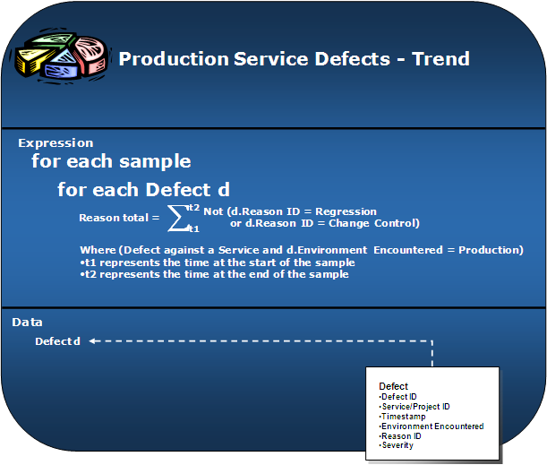
Metric: Production Service Defects - Trend
Purpose: Defects encountered in the operational environment that originate from services speaks to a breakdown in quality with respect to the services delivered through the service factory. Obviously, a large number of service defects will result in reduced trust in the SOA and reduced effectiveness. Monitoring trends with respect to service defects is an important aspect of maintaining adequate quality and perceived quality observed through the service factory.
Computation: This metric simply totals the number of defects recorded against services over each sample period. The totals do not include service defects resulting from regressions or change control issues, as these types of defects point to separate areas of concern.
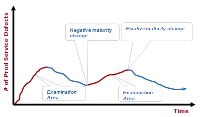
Analysis: Production Service Defects - Trend
Interpretation: Minimizing the number of production encountered service defects is the obvious goal. Organizations should set target levels for this metric and strive to keep levels a low as possible. It is not uncommon to see higher numbers in new or immature SOAs, but a key indicator of quality is low trending numbers observed through this metric.
With respect to the Project, Portfolios, and Services domain, the primary building blocks of any SOA are the services that it produces. If poor quality is delivered, then there is an obvious negative impact with respect to maturity within this domain. Unacceptable levels observed, should result in closer examination of the quality control processes within the service engineering factory.
The Production Regression Defects – Trend metric is depicted below:
Metric: Production Regression Defects - Trend
Purpose: Regression defects observed against services represent a break-down in overall service evolution quality, and may lead to problems with respect to trust in the service factory and overall SOA strategy by service consumers. A break down in trust may lead to a lengthy test cycle from the consumer side prior to the release of any changes to services which can greatly hinder the SOA’s ability to deliver change rapidly. This metric monitors the number of regression defects recorded against services, which should be closely monitored in order to prevent any breakdown in trust between the service factory and its consumers.
Computation: This metric simply counts the number of regression defects opened against services over the sample periods and provides a trend of change in regressions recorded across each sample.
Analysis: Production Regression Defects - Trend
Interpretation: The goal is to keep regressions at a very low level. Any area of increasing trend or flat areas recorded at high-levels need to be examined closely. There are multiple reasons for regressions, one of which may be indicative of a breakdown or failure with respect to the versioning strategy. Other areas which may require a closer look include the test standards established. In this case, examining defects and the services that they are recorded against may lead to answers. In the area of interest, look at the following:
With respect to the Project, Portfolios, and Services domain, the primary building blocks of any SOA are the services that it produces. If poor quality is delivered when evolving services, then there is an obvious negative impact with respect to maturity within this domain. Unacceptable levels observed, should result in closer examination of the quality control processes within the service engineering factory particularly around regression testing.
The Service Creation by Category – Trend metric is depicted below:
Metric: Service Creation by Category - Trend
Purpose: Understanding the rate of growth with respect to services of varying category is important in understanding the types of services that are currently (and historically) produced by the service factory. Different categories of services represent different capabilities and values with respect to the SOA. For instance, utility services are typically highly reusable, but typically do not directly provide any business value (other than assist IT in getting things done faster); whereas business services are typically reused but provide direct business value.
Computation: This metric totals service creation by category where the services originated from service candidates approved for realization within the sample period. Each sample is of uniform length so trend based analysis can be completed against the data.
Analysis: Service Creation by Category - Trend
Interpretation: The trend with respect to services being created by any particular type provides important information with respect to the Project, Portfolios, and Services domain. A breakdown by service category is provided below:
The Service Creation by Scope – Trend metric is depicted below:
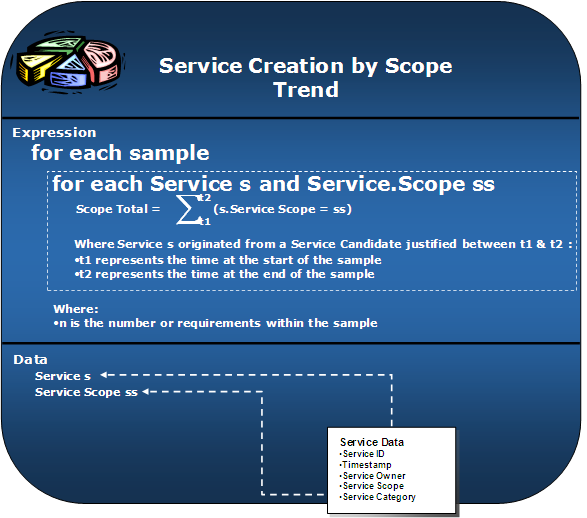
Metric: Service Creation by Scope - Trend
Purpose: Understanding the rate of growth with respect to services of varying scope is important in understanding the types of services that are currently (and historically) produced by the service factory. Different scopes of services represent different capabilities and values with respect to the SOA adoption. For instance, intra-application services represent a very low level with respect to adoption, while enterprise wide services indicate that the services are being created to service the entire enterprise.
Computation: This metric totals service creation by scope where the services originated from service candidates approved for realization within the sample period. Each sample is of uniform length so trend based analysis can be completed against the data.
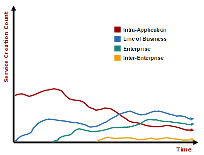
Analysis: Service Creation by Scope - Trend
Interpretation: The trend with respect to services being created by any particular type provides important information with respect to the Project, Portfolios, and Services domain. A breakdown by service scope is provided below:
The Justified Minor Service Version Change – Trend metric is depicted below:
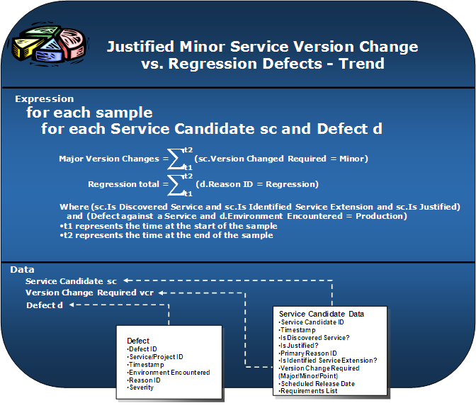
Metric: Justified Minor Service Version Change - Trend
Purpose: Minor version changes are typically viewed as neutral with respect to SOA maturity. However, they need to be monitored with respect to regression defects reported. Since minor version changes symbolize a change to a service that should be deemed backwards compatible, then it should have no impact on existing consumers upon deployment. This metric correlates minor version changes with regression defect trends, so that any anomaly can be noted and investigated.
Computation: This metric collects (separately) totals of approved minor version changes to services, and regression defects encountered in the operational environment. The totals are collected over several samples of uniform size allowing for trend analysis.
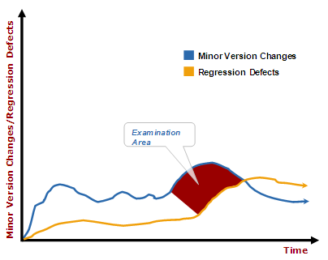
Analysis: Justified Minor Service Version Change - Trend
Interpretation: This metric is interested in any correlation between changes in the rate of minor version changes to services with respect to the number of regression defects encountered in the production environment. Minor version changes should be perceived as seamless, and any correlation between an increase in minor version changes and a noticed increase in regression defects is a negative with respect to overall quality of perceived from the Project, Portfolios, and Services domain, and places downward pressure on overall SOA maturity and adoption.
The Design: Reuse Justification Failures – Trend metric is depicted below:
Metric: Design: Reuse Justification Failures - Trend
Purpose: When services are discovered for potential reuse, there is a validation process that should be executed to ensure that the service to be consumed is appropriate for the consumers needs. There are many reasons to deny a particular service for reuse by a particular consumer. One of those reasons is when the service is not designed in a way that would make it appropriate for reuse by the consumer. When a reuse candidate is denied for design reasons, it means that the service was not designed to meet the demands of this particular consumer, and the organization is not willing to invest in the changes necessary redesign the service to meet the demands of this consumer.
Computation: This metric computes the percentage of design based service reuse validation failures with respect to the rest of the reasons why service reuse requests are being denied. The data is collected over multiple samples of unified length in order to provide for trend analysis.
Analysis: Design: Reuse Justification Failures - Trend
Interpretation: Minimizing this trend variable is the goal of every SOA. Any increasing trend, or sustained high-level of design based denials is an indicator of poor service design from a methodology and process perspective. If services are not designed in a way that is either easily extensible, or highly flexible to meet the demands of a wide variety of consumers, then the service delivery process is flawed. Quite often high numbers in this particular metric is indicative of an organization that is still focused on just delivering the service in the fastest way possible with respect to the current requirements. This strategy is ineffective for an SOA as it typically will result in a high number of service reuse validation failures, or a large number of significant service version changes (which may represent a large, negative impact on overall SOA responsiveness).
The Requirements: Reuse Justification Failures – Trend metric is depicted below:
Metric: Requirements: Reuse Justification Failures - Trend
Purpose: When services are discovered for potential reuse, there is a validation process that should be executed to ensure that the service to be consumed is appropriate for the consumers needs. There are many reasons to deny a particular service for reuse by a particular consumer. One of those reasons is when the service does not meet the specific requirements demanded by the consumer.
Computation: This metric computes the percentage of requirements based service reuse validation failures with respect to the rest of the reasons why service reuse requests are being denied. The data is collected over multiple samples of unified length in order to provide for trend analysis.
Analysis: Requirements: Reuse Justification Failures - Trend
Interpretation: When requirements mismatches are determined to be the cause for service reuse validation failures it may be stemming from two potential problems. One, the requirements gathering process, and service design process is not thinking broadly enough with respect to potential consumers; or two, the discovery process is failing, in that the service was never designed for use by the proposed consumer.
In the event of the first case, there is a negative impact with respect to the Business & Strategy domain, because services that should have been designed for use by consumers are being denied because the requirements were not considered. In order to prevent further damage, closer scrutiny should be given to the service definition and design processes where a wider audience of potential consumers needs to be considered with respect to defining and designing the services capabilities. This process does not necessarily need to ensure that the requirements are fulfilled in the current release of the service, but it should ensure that adding the requirements later will require as little impact to existing consumers as possible.
The Justified Major Service Version Change – Trend metric is depicted below:
Metric: Justified Major Service Version Change - Trend
Purpose: Major service version changes have the potential for a large disruptive impact on the consumers of a service, and may be viewed very negatively against overall SOA effectiveness, especially if many are observed. This metric is designed to monitor the amount of major service versions being undertaken to support additional consumers.
Computation: This metric totals the number of major service version changes approved to existing services over multiple samples of uniform length. The data is used for the purpose of trend analysis.
Analysis: Justified Major Service Version Change - Trend
Interpretation: Major service version changes should be held to a minimum, and organizations should define target levels for this metric. Any observed increasing trend, or sustained high value with respect to this metric is a red flag with respect to overall SOA effectiveness, as it represents a breakdown in flexibility and the ability of the organization to cope with change.
High or increasing trends noticed through analyzing this metric represent negatively towards maturity in Project, Portfolios, and Services domain. Negative results experienced through this metric represent a break-down in the engineering factory as sufficient flexibility is not being designed into services. Changes to the service delivery processes may be necessary in order to prevent a continuation of negative trending.
The Release Plan Impacts (Factory Capacity) – Trend metric is depicted below:
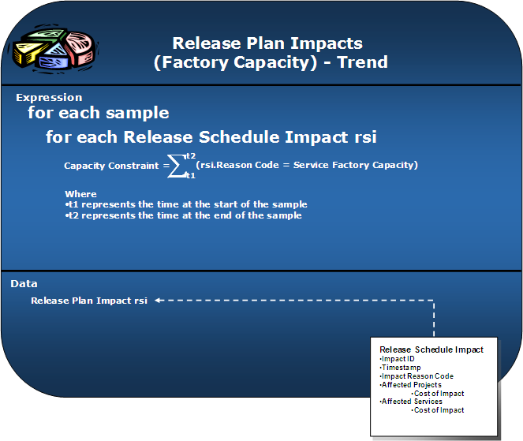
Metric: Release Plan Impacts (Factory Capacity) - Trend
Purpose: Service factory capacity is something that should be continuously monitored in a highly active SOA. When release schedule impacts occur for reason of factory capacity limits, then the SOA will not be as productive, and is constrained by the resources available to deliver shared services.
Computation: This metric totals the number of release schedule impacts that occurred over each uniform sample area where the reason for the impact was a lack of sufficient service factory resources to deliver per the requested schedule.
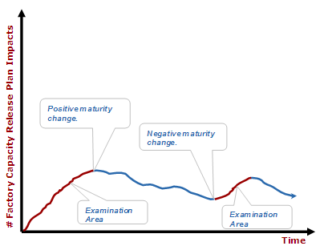
Analysis: Release Plan Impacts (Factory Capacity) - Trend
Interpretation: Obviously sustaining a minimal number of these types of schedule impacts is optimal, and in a mature SOA there will be few (if any) on average. If the service factory is becoming overloaded, there are a couple potential reasons. One is that the service candidate justification process needs to be tightened up because too many candidates are getting through, that potentially are of lower priority. This is disruptive because the overall schedule for higher priority activities may be impacted. The second is that the service candidate justification process is working properly, but there simply is not enough resource assigned to the service factory to handle the sustained requests for service delivery. In this situation, small spikes may be acceptable, but areas of lengthy trend increases, or sustained high levels warrant possible adding additional resources to the service factory.
The Service/Project Delivery Schedule Conformance – Trend metric is depicted below:
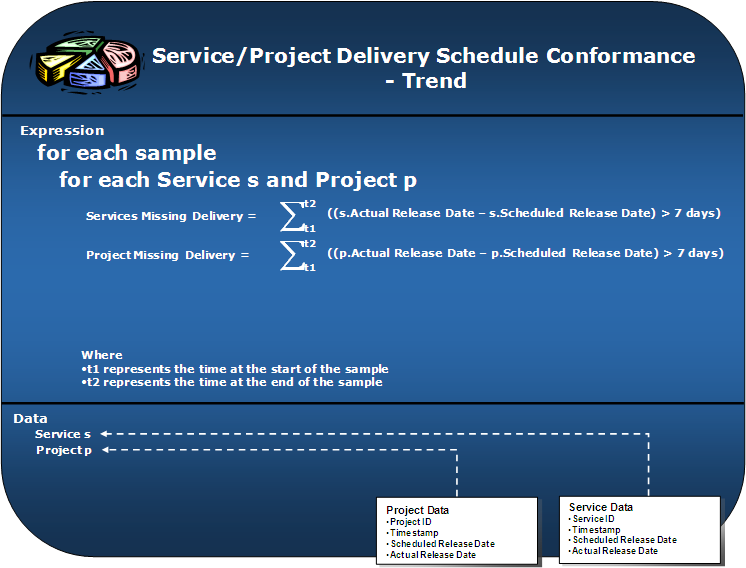
Metric: Service/Project Delivery Schedule Conformance - Trend
Purpose: Measuring overall conformance to delivery schedules is an important component of monitoring with respect to any IT strategy. This metric provides the ability to track project and service deliveries separately with respect to conformance their release schedules.
Computation: This metric simply computes the totals of service and project delivery misses with respect to their release schedules separately over multiple samples of uniform length. The data can then be utilized for trend analysis.
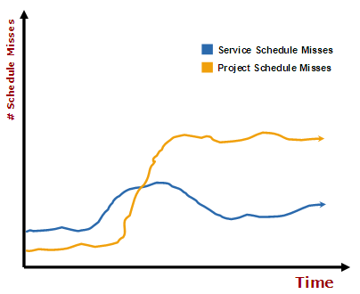
Analysis: Service/Project Delivery Schedule Conformance - Trend
Interpretation: Again, minimizing the number of schedule misses is the goal. Service schedule misses may be more disruptive than individual project misses as multiple projects may be affected by delays in service delivery. Obviously if an increasing trend is noticed in either types of deliveries then corrective action should be taken to first determine the reason for the misses, and what needs to be done to ensure that either the estimation process is corrected, or the delivery process is streamlined (or both).
If you have decided that you should focus on the Organization domain, you should now look at metrics that could be relevant for this area.
Monitoring maturity in the Organization domain means the following areas should be considered:
There is only one metric presented in this section which is designed to be a part of the process to monitor for changing maturity levels within the Organization domain. It contains guidance with respect to how to properly interpret and utilize the information presented through the metric to effectively improve maturity within this domain.
The Skill-Set Candidate Justification Failures – Trend metric is depicted below:
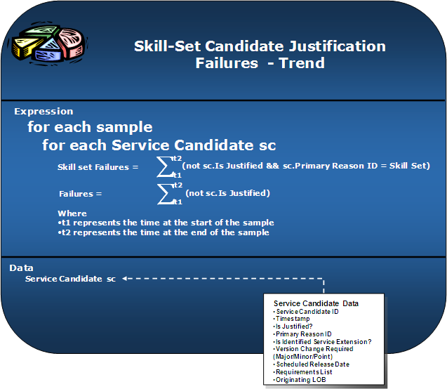
Metric: Skill-Set Candidate Justification Failures - Trend
Purpose: When service candidates are presented for justification as shared services, there are many reasons to deny a particular service candidate for realization as a shared service. Skill Set is one of those reasons. When skill set is determined to be the main inhibitor for realization of the service candidate as one or more shared services, it indicates that the organization does not possess the appropriate skill, or is unwilling to invest in the training necessary to realize the service candidate.
Computation: This metric computes the percentage of skill set based service candidate justification failures with respect to the rest of the reasons why service candidates are being denied realization. The data is collected over multiple samples of unified length in order to provide for trend analysis.
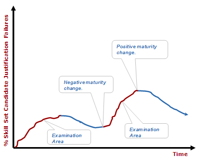
Analysis: Skill-Set Candidate Justification Failures - Trend
Interpretation: Minimizing levels observed in this metric is the goal. Any increasing trend in skill set based service candidate justification failures, or sustained high levels of such failures places significant downward pressure on SOA maturity. This particular metric points directly at the Organization domain, as skill sets is a primary component of this domain. This also plays negatively against the Business & Strategy domain as services, which may potentially offer a great deal of value to the organization, are not being realized.
Increasing scrutiny should be given to the types of service candidates being denied over the examination area to determine training, or external hiring may be necessary to prevent the continuation of the negative trend.
If you have decided that you should focus on the Governance domain, you should now look at metrics that could be relevant for this area.
Monitoring maturity in the Governance domain means the following areas should be considered:
The metrics presented in this section are designed to monitor for changing maturity levels within the Governance domain, and provide guidance with respect to how to properly interpret and utilize the information presented through the metric to effectively improve maturity within this domain.
The Service Candidate Justification Ratio – Trend metric is depicted below:
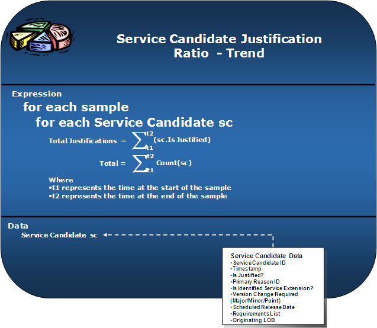
Metric: Service Candidate Justification Ratio - Trend
Purpose: The rate at which services are being justified needs to be monitored. The service candidate justification process is the gateway to service population, and is the controlling mechanism with respect to creating the correct services. This process needs to be taken seriously within the organization. The rate of service candidate justification can mean different things depending on the maturity level of the organization.
Computation: This metric computes a percentage of service candidates being justified for several sample periods of uniform length. Trend analysis can then be utilized to interpret changes in levels over time.
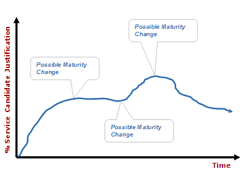
Analysis: Service Candidate Justification Ratio - Trend
Interpretation: Inflection points, representing a change in either direction can be an indicator of either positive or negative maturity change. For instance, a relatively new SOA will probably experience an increasing trend in service justifications as it gets rolling. However, as the service population grows, this should level off and eventually begin to decline. A change in direction with respect to this trend may also be brought upon by a change to the business such as an acquisition, or some other significant business event. This trend may also be watched with respect to the service category and scope trends. To track growth with respect to particular types of services, the overlay with the category trend is included below as an example:
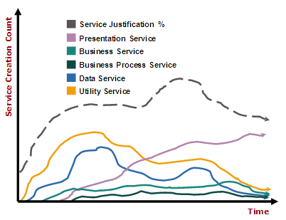
Analysis: Service Justification % vs. Service Category
In the example above, there is a spike in service justifications observed near the center of the graph. It may be worth examining the relationship to the types of services produced shortly after. In this scenario it looks like there was a small spike in data services delivered. What brought this on? Does the process need to be tightened? Or are the data services necessary to support a change in business direction or some other event?
The Service Enablement Candidate Justifications – Trend metric is depicted below:
Metric: Service Enablement Candidate Justifications - Trend
Purpose: Service enablement, in most scenarios, represents a form of low hanging fruit approach to service justification. This reasoning indicates that the service will be relatively easy to realize as a shared service as its function already exists within the current set of IT systems and the migration necessary to make the functions available as a shared service are feasible. These types of justifications need to be monitored closely; they may be an indicator that many services are being realized because there is little effort needed to do so, however, higher priority, or services that will provide increased value to the business may be passed on because too much effort is being spent on realizing existing function within the business.
Computation: This metric computes the percentage of service candidate justifications where the primary reason for justification is service enablement. This metric measures this value with respect to the rest of the reasons why service candidates are being justified for realization. The data is collected over multiple samples of unified length in order to provide for trend analysis.
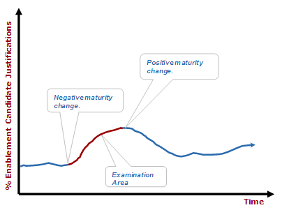
Analysis: Service Enablement Candidate Justifications - Trend
Interpretation: The key to focus on with respect to interpreting this metric is that easy does not always equate to necessary. Just because a service candidate is perceived as easy to create does not mean that it should be automatically approved for realization, especially if other services that should be given more relevance with respect to business value are being passed on, or the service factory is becoming over burdened and schedule impacts are taking place because of insufficient service factory capacity. Any increasing trend or sustained high value with respect to service enablement justifications should be examined closely. In general, the amount of services justified for reason of service enablement should be minimal or tightly watched with respect to overall service factory capacity.
An example correlation between the two metrics is depicted below:
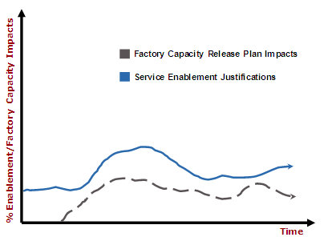
Analysis: Service Enablement Candidate % vs. Factory Capacity Release Plan Impacts
In the scenario above, it is clear that Service Enablement justifications may have been miscalculated, as the service factory was already operating at full capacity since schedule impacts were being observed due to insufficient service factory resource. In this case, it is quite likely that service enabling services is responsible for project and service delivery delays, in addition to the denial of service justifications for other types of services where service factory capacity was taken into consideration.
The Reuse Candidate Justifications vs. Reuse – Trend metric is depicted below:
Metric: Reuse Candidate Justifications vs. Reuse - Trend
Purpose: When services are justified for the purpose of high reuse potential, then monitoring should take place to ensure that reuse speculation is actually resulting in increased reuse. This metric is designed to monitor reuse levels with respect to service candidate justifications based on perceived reuse levels.
Computation: This metric computes totals of both reuse justification instances and actual validated reuse instances over multiple samples of uniform size. This allows the two trends to be plotted independently and analyzed together.
Analysis: Reuse Candidate Justifications vs. Reuse - Trend - 1
Interpretation: Simply put, a spike in reuse justifications should result in some form of increasing trend in actual reuse observed with a time delay. The illustration above provides a trend that does not identify any particular problems with respect to this correlation. The illustration below, on the other hand, is indicative of a justification process problem:
Analysis: Reuse Candidate Justifications vs. Reuse - Trend - 2
From the scenario depicted above, there is an obvious issue with the justification process. There is a noticeable increase in service candidate justifications for the reason of high reuse potential; however, there is no real noticeable increasing trend in actual reuse. The justification process should be tightened. This type of scenario places downward pressure from a governance perspective.
The Project Impact Candidate Extension Justification Failures – Trend metric is depicted below:
Metric: Project Impact Candidate Extension Justification Failures - Trend
Purpose: Proposed changes to services, when the expected changes is greater than a point release, such as a defect fix, need also be passed through the service candidate justification process. This is necessary to ensure that the correct changes are made to services and control is maintained and governed with respect to service evolution. When services are denied the ability to evolve, there may be a potential breakdown with respect to the SOAs ability to accept change, and this trend should be monitored closely.
Computation: This metric computes the percentage of project impact based service candidate justification failures with respect to the rest of the reasons why service candidates are being denied realization. Only candidates that are being justified for extension are considered in the data. The data is collected over multiple samples of unified length in order to provide for trend analysis.
Analysis: Project Impact Candidate Extension Justification Failures - Trend
Interpretation: The goal is to minimize this trend. When service extensions are being denied for reason of project impact it is an indicator of overall program management ineffectiveness. Increasing trends or sustained high levels indicate that the SOA program is flawed because it has not been adequately established to accept change.
The Agility Candidate Justifications – Trend metric is depicted below:
Metric: Agility Candidate Justifications - Trend
Purpose: Agility is one of the key goals that organizations seek to achieve with respect to their SOA. Monitoring trends in services justified for the purpose of agility provides important information with respect to achieving maturity with SOA.
Computation: This metric computes the percentage of service candidate justifications where the primary reason for justification is agility. This metric measures this value with respect to the rest of the reasons why service candidates are being justified for realization. The data is collected over multiple samples of unified length in order to provide for trend analysis.
Analysis: Agility Candidate Justifications - Trend
Interpretation: Typically services that are realized for the purpose of providing increased agility to the business come with a high value with respect to potential business value generated through the realization of the service. These particular types of services do not necessarily require a large number of reuse instances to be valuable in the organization. An increasing trend in these types of services is definitely viewed as an increase in maturity with respect to the Business & Strategy domain, as it is indicative of more services being created with higher strategic value. One cautionary note is that these services should rarely be created without at least one consumer as they typically require more investment to produce.
With respect to the Governance domain, an increase in agility targeted services indicates that potential maturing may be taking place in the service justification process. A rapid increase in this trend should be examined with caution however, as it may actually mean a breakdown in the service justification process. Further, a rapid increase in these types of services is rare in a relatively new (or immature) SOA, and quite often indicates a problem in the service justification process. Quite often these types of services are best constructed as composites from lower level services, and if an SOA has not invested in developing these types of services, then the higher level services are typically much less realistic, or are much more difficult to justify (early on).
There are no templates available to assist with this technique.
This technique is recommended for use in the following OUM tasks:
| Task | Usage |
|---|---|
| This technique provides a set of metrics used to measure and monitor changes in SOA maturity. |
Use the following criteria to check the quality of this technique:

Copyright © 2006, 2016, Oracle and/or its affiliates. All rights reserved.